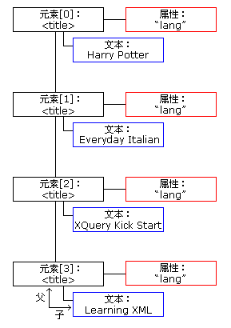

XML DOM Node List
节点列表由 getElementsByTagName() 方法和 childNodes 属性返回。
实例
下面的例子使用 XML 文件 books.xml。
函数 loadXMLDoc()，位于外部 JavaScript 中，用于加载 XML 文件。
- 从第一个 <title> 元素获取文本
- 本例使用 getElementsByTagName() 方法从 "books.xml" 中的第一个 <title> 元素获取文本。
- 通过使用 length 属性来循环节点
- 本例使用节点列表和 length 属性来循环 "books.xml" 中的所有 <title> 元素。
- 获取元素的属性
- 本例使用属性列表从 "books.xml" 中的第一个 <title> 元素获取属性。
DOM Node List
当使用诸如 childNodes 或 getElementsByTagName() 属性或方法时，会返回 NodeList 对象。
NodeList 对象表示节点的列表，以 XML 中的相同顺序。
使用从 0 开始的下标来访问节点列表中的节点。
下面的图像表示 "books.xml" 中 <title> 元素的节点列表：
下面的代码片段通过使用 loadXMLDoc() 把 "books.xml" 载入 xmlDoc 中，并返回 "books.xml" 中 title 元素的一个节点列表：
xmlDoc=loadXMLDoc("books.xml");
x=xmlDoc.getElementsByTagName("title");
以上语句执行之后，x 成为一个 NodeList 对象。
下面的代码片段从节点列表 x 中的第一个 <title> 元素中返回文本：
txt=x[0].childNodes[0].nodeValue;
在以上语句执行之后，txt = "Everyday Italian"。
Node List Length
NodeList 对象会保持自身的更新。如果删除或添加了元素，列表会自动更新。
节点列表的 length 属性是列表中节点的数量。
下面的代码片段通过使用 loadXMLDoc() 把 "books.xml" 载入 xmlDoc，并返回 "books.xml" 中 <title> 元素的数量：
xmlDoc=loadXMLDoc("books.xml");
x=xmlDoc.getElementsByTagName('title').length;
在上面的语句执行之后，x = 4。
节点列表的长度可用于循环列表中所有的元素。
下面的代码片段使用 length 属性来遍历 <title> 元素的列表：
xmlDoc=loadXMLDoc("books.xml");
//the x variable will hold a node list
x=xmlDoc.getElementsByTagName('title');
for (i=0;i<x.length;i++)
{
document.write(x[i].childNodes[0].nodeValue);
document.write("<br />");
}
输出：
Harry Potter Everyday Italian XQuery Kick Start Learning XML
例子解释：
- 通过使用 loadXMLDoc() 把 "books.xml" 载入 xmlDoc
- 设置保存所有 title 元素的节点列表的 x 变量
- 从所有 <title> 元素的文本节点输出值
DOM Attribute List (Named Node Map)
元素节点的 attributes 属性返回属性节点的列表。
这被称为 Named Node Map，除了方法和属性上的一些差别以外，它与节点列表相似。
属性列表会保持自身的更新。如果删除或添加属性，这个列表会自动更新。
下面的代码片段通过使用 loadXMLDoc() 把 "books.xml" 载入 xmlDoc 中，并从 "books.xml" 中的第一个 <book> 元素返回属性节点的一个列表：
xmlDoc=loadXMLDoc("books.xml");
x=xmlDoc.getElementsByTagName('book')[0].attributes;
以上代码执行之后，x.length 等于属性的数量，可使用 x.getNamedItem() 返回属性节点。
下面的代码片段一个 book 的 "category" 属性的值，以及其属性的数量：
xmlDoc=loadXMLDoc("books.xml");
x=xmlDoc.getElementsByTagName("book")[0].attributes;
document.write(x.getNamedItem("category").nodeValue);
document.write("<br />" + x.length);
输出：
children 1
例子解释：
- 通过使用 loadXMLDoc() 把 "books.xml" 载入 xmlDoc 中
- 把 x 变量设置为第一个 <book> 元素的所有属性的一个列表
- 从 "category" 属性输出其值
- 输出属性列表的长度